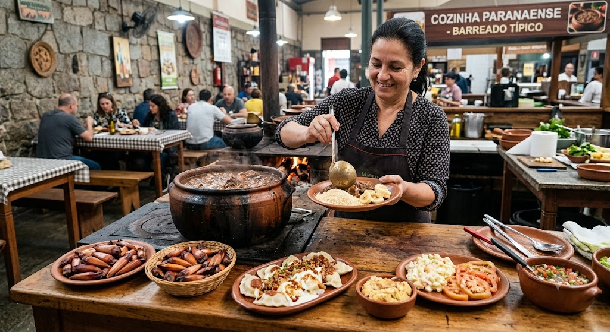
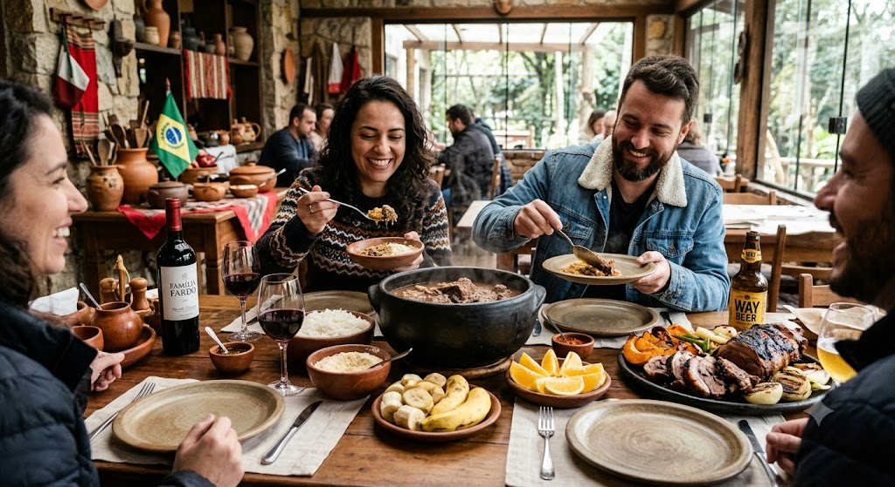
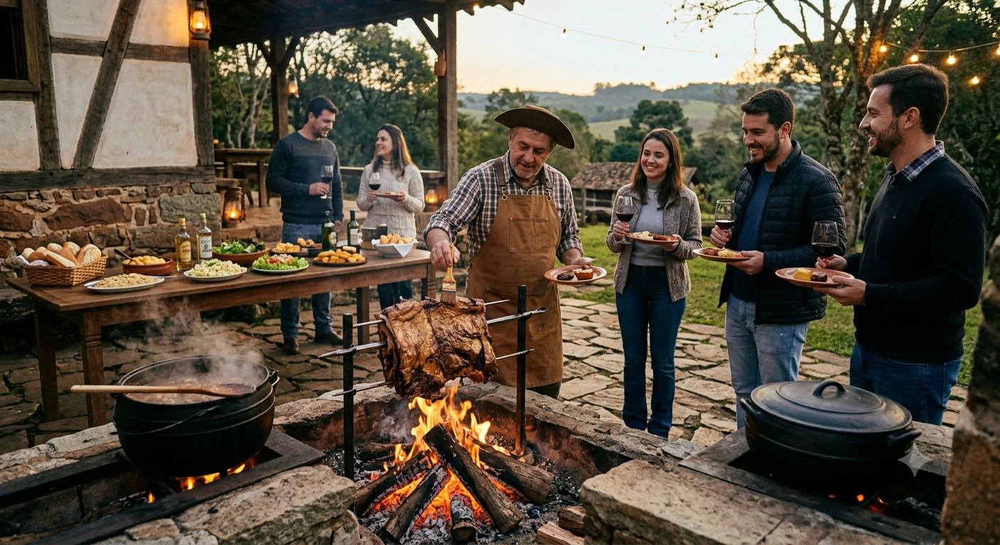

A gastronomia paranaense é um reflexo direto da sua formação histórica e geográfica, combinando a culinária indígena, a herança dos tropeiros e os costumes trazidos por imigrantes de diversas partes da Europa e Ásia.No litoral, o grande destaque é o Barreado, prato feito com carne bovina cozida por mais de doze horas em panela de barro selada com pasta de farinha de mandioca, servido tradicionalmente com farinha e banana. Já na capital, a Carne de Onça se consolidou como patrimônio cultural, consistindo em carne moída bovina crua temperada, servida sobre broa preta com azeite, cebola e cheiro-verde. A semente da araucária, o pinhão, é outro ingrediente central na identidade do estado, presente em receitas como o entrevero, paçocas e risotos. No oeste, o Porco no Rolete mobiliza festas comunitárias, enquanto o interior também valoriza o Dourado no Rolete e pratos à base de peixes de água doce.
ra este projeto, o tema escolhido é **Lendas Paranaenses**, abordando narrativas populares como a Gralha-AzulAs influências étnicas moldaram fortemente as regiões do Paraná. Poloneses e ucranianos popularizaram o pierogi e sopas como o borscht. A imigração italiana fincou raízes em bairros como Santa Felicidade, famoso pelo frango a passarinho, polenta frita e massas artesanais. Alemães e holandeses trouxeram a tradição dos queijos, embutidos e dos fartos cafés coloniais, muito presentes em cidades como Carambeí e Castro. Da cultura tropeira, herdou-se o hábito do feijão tropeiro e das carnes assadas em fogo de chão.A identidade alimentar do estado também é marcada por produtos emblemáticos. A cultura da erva-mate acompanha a história paranaense através do consumo do chimarrão e do tereré. O norte do estado carrega a memória das grandes fazendas de café na famosa terra roxa, enquanto o estado como um todo se destaca atualmente como um forte polo de cervejas artesanais e produção de cachaças premiadas no litoral.

A Arte e a História dos Sabores
A gastronomia é a arte de transformar alimentos em experiências regionais, culturais e afetivas. Ela vai muito além da simples nutrição, funcionando como uma linguagem universal que expressa a história, o clima e os costumes de cada povo.Em sua essência, a gastronomia envolve a escolha dos ingredientes, as técnicas de preparo, a combinação de sabores e o modo de servir. No Brasil, por exemplo, ela se destaca pela imensa diversidade: do uso da mandioca e peixes na Região Norte aos assados e à cultura dos grãos e carnes no Sul, cada Estado desenvolveu uma identidade própria a partir dos ingredientes locais e das migrações que recebeu.Mundialmente, o conceito de gastronomia abrange desde a culinária tradicional e caseira até a alta gastronomia, focada em inovação e apresentação. Hoje, o setor também prioriza a sustentabilidade, valorizando produtores locais, ingredientes da estação e a redução do desperdício.

Os Ingredientes Fundamentais da Cozinha Paranaense
A culinária paranaense é construída sobre ingredientes marcantes que refletem a abundância da terra e a mistura de culturas que povoaram o estado.O pinhão, semente da araucária, é o maior símbolo gastronômico da região, colhido no outono e inverno para estrelar desde pratos simples até receitas elaboradas como o entrevero, paçocas e risotos. A tradição tropeira e a pecuária forte trouxeram o gosto pelas carnes bovinas, com cortes específicos sendo essenciais para o cozimento lento do Barreado e para os assados de fogo de chão. A farinha de mandioca, herança indígena e litorânea, surge como elemento fundamental para dar a consistência ao pirão do Barreado e acompanhar peixes locais.A banana, cultivada em abundância no litoral, serve como o acompanhamento clássico indispensável para balancear o sabor do Barreado. Já a erva-mate vai além do chimarrão e do tereré, ganhando espaço na gastronomia contemporânea em molhos, crostas de carnes e sobremesas. Os derivados de porco e embutidos, como salames e linguiças defumadas trazidos pelas imigrações europeias, dão tom aos temperos do interior e a pratos como o Porco no Rolete. Por fim, a broa preta, herança do leste europeu, marca presença como a base rústica e obrigatória para a tradicional Carne de Onça.
